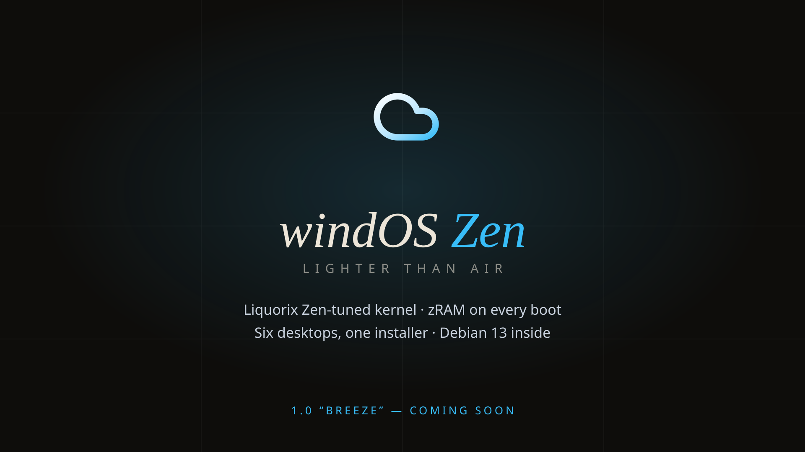
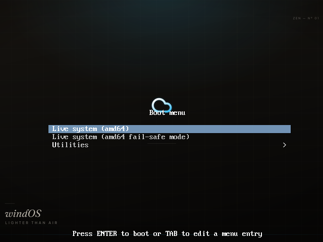
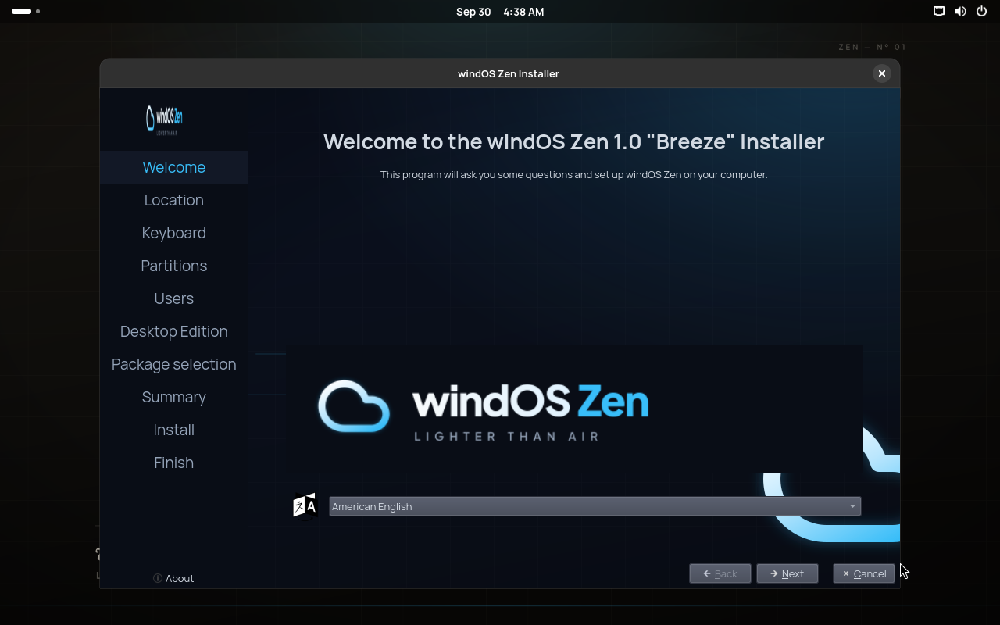
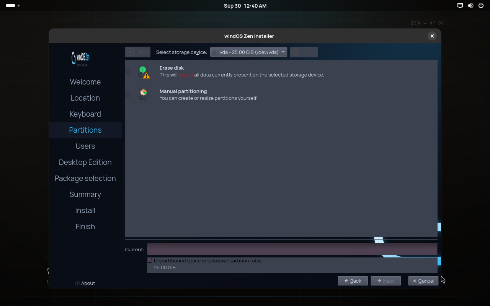
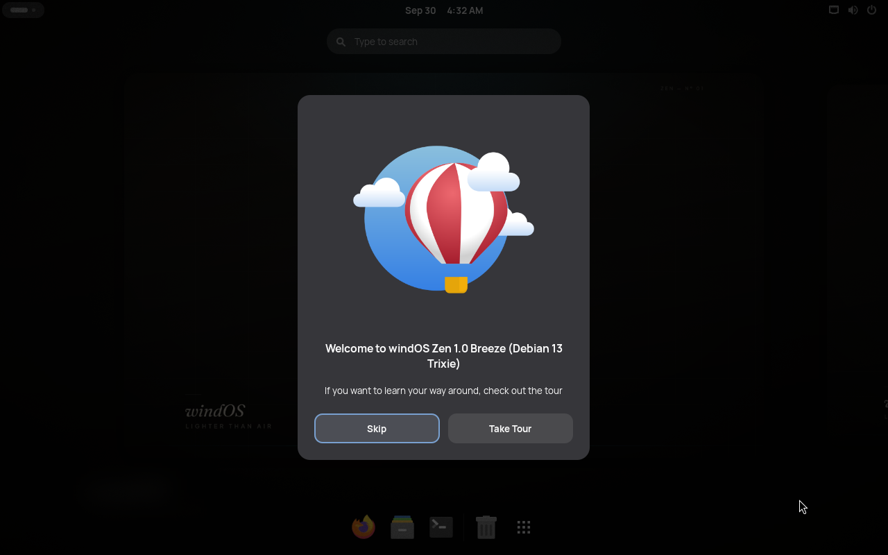

windOS Modern GNOME
GNOME Shell with Dash to Dock, Blur my Shell, AppIndicator and User Themes, plus the windOS dconf profile — dark Arc, cyan accent. The glassmorphic option, and the heaviest one.
estimate · ~900 MB idle
Lighter Than Air · Debian 13 “Trixie” · live-build · amd64
A Debian 13 live distribution for hardware that still works. One hybrid ISO that boots on BIOS and UEFI, lands you in a GNOME live session, and installs through Calamares with six desktop editions to pick from. Liquorix kernel, zram on every boot, no Plymouth, no telemetry, no funny business.

site/ad-zen.png, 1920×1080. The wordmark, the cloud and the cyan are the same tokens the distro ships in its GRUB theme and Calamares branding.Status · checked 15 Oct 2026
Nothing on this page links to a download, because there is nothing to download. The image is not published — no GitHub release, no tag, no mirror. Until the first build lands, the only ways to get windOS Zen are to build it from source or to read the build tree in the repository.
shots/The repository tracks a live-build tree that is currently ahead of the last successful build, so anything you compile today will differ from the image the measurements describe. That is normal for a distro in active development; it is also why we would rather ship no ISO than a stale one.
Fig. 01 — Inside the image
Every line below is read out of the build tree — live-build/config/, modules/ — not out of a marketing doc.
| Layer | Detail |
|---|---|
| Base | Debian 13 “Trixie”, built with Debian's own live-build (--distribution trixie, amd64 only, main contrib non-free non-free-firmware). |
| Image | iso-hybrid: syslinux on BIOS, grub-efi on UEFI, a memtest86+ entry, sha256 checksums. One file, both firmware types. |
| Live session | GNOME Shell under gdm3 with autologin, the windOS dconf profile (Arc-Dark, cyan accent) plus dash-to-dock, blur-my-shell and appindicator. |
| Installer | Calamares on the same ISO: packagechooser@de picks one of six desktop editions, then optional netinstall groups. A dispatcher inside the installed system applies the choice from packages-<id>.list. |
| Kernel | Liquorix (Zen-tuned) — 7.2.10-2-liquorix-amd64 in the last build, pulled from the Liquorix Debian repo via config/archives/liquorix.*. Exactly one vmlinuz in the image. |
| Memory | zram swap on every boot: zstd, level 3, sized min(50 % RAM, 2 GiB), priority 100 — 512 MB of zram on a 1 GB box. Plus earlyoom and a tuned sysctl.d profile. |
| Boot | Verbose on purpose. Plymouth is not in the package lists at all — a plain removal, not a mask. No quiet, no splash; you watch your machine boot. |
| Boot menu | The installed system's GRUB menu is themed — windOS backdrop, hairline layout, cyan selection, whole-scale percentages so it holds from 1024×768 to 1920×1080. |
| Compression | squashfs xz with the x86 BCJ pre-filter (MKSQUASHFS_OPTIONS), the densest practical payload for an x86-64 live image. |
| Rescue | windOS Boot — a MiniBoot port with one-key rescue, kexec fast-boot and entries for other installed systems on the disk. |
Fig. 02 — One ISO, six desktops
The edition picker is a step in the Calamares installer, not six downloads. Choose once, install once, get the desktop you asked for on the installed disk.
GNOME Shell with Dash to Dock, Blur my Shell, AppIndicator and User Themes, plus the windOS dconf profile — dark Arc, cyan accent. The glassmorphic option, and the heaviest one.
estimate · ~900 MB idle
The ultra-light edition: windos-zen fluxbox style, picom compositor, nitrogen wallpaper and a conky HUD. Already on the live medium — the dispatcher applies it after install.
estimate · under 200 MB idle
Arc-Dark and Papirus, whisker menu, compositor on. The modernized-light middle: a full desktop that still fits in a 1 GB box next to a browser.
estimate · ~350 MB idle
Dark Breeze-derived palette, KWin blur limited to panels, background sync and telemetry masked. Sleek, and it keeps its mouth shut.
estimate · ~600 MB idle
Pure Qt with OpenBox and no compositor by default. The potato-class option — it will run on things you were about to throw away.
estimate · ~220 MB idle
Openbox, i3-wm and Sway with windOS dotfile skeletons. For people who think mouse clicks are a latency problem.
keyboard-first · compositor optional
Source of the six: modules/04-calamares/etc/calamares/modules/packagechooser-de.conf. The idle figures are the maintainers' estimates recorded in that build config — not measurements. The only measured number on this page is the next one.
Fig. 03 — Proof, labelled honestly
windos-zen-1.0-trixie-amd64.hybrid.iso, built 13 Oct 2026Those are the whole numbers, straight from the build log and the baseline table in OPTIMIZE.md. They describe the 13 Oct image, which still shipped Plymouth and duplicate kernel payloads; the tree has moved since (bootloader fix, Plymouth removal, GRUB theme, curated locales, -Xbcj x86), so the next build will measure differently. We will re-measure before quoting anything new.
Fig. 04 — 29 seconds
A fast cut of the real image: the boot menu, the Calamares walkthrough, and the GNOME desktop the ISO lands you in. No render farm, no mock-ups — every frame is a capture from the built ISO.
Music bed: “Uplifting Bass” by Lily J — Mixkit Stock Music Free License. Free for commercial and personal use, no attribution required; safe for YouTube and TikTok publishing (no Content ID). Source: https://mixkit.co/free-stock-music/ambient/ · full credit in music/CREDIT.txt. Backup track considered and not used: “Relax Beat” by Arulo.
Fig. 05 — From the live ISO
Captured in QEMU from the built ISO, 30 Sep 2026. Click any frame for the full-size original.




The full set — install walk-through, boot frames, dialogs — lives in shots/ (57 frames). Brand assets, wallpapers, the icon suite and the ASCII lockup are in the brand gallery.
Fig. 06 — How to actually get it
No ISO is published. The release notes are short: the image arrives with build16. Until then there are exactly two paths, and both start at the repository.
Everything is public: the live-build tree, the numbered modules, the docs and the measurements.
docs/README.md — installing, live session, post-install, troubleshooting, windOS BootOPTIMIZE.md holds the measured baseline and the ranked action listThe ISO is reproducible from a Debian 13 builder or a debian:trixie container. Expect a long squashfs run.
build-iso.sh from live-build/# host deps (Debian 13) apt install live-build debootstrap squashfs-tools xorriso \ librsvg2-bin dosfstools mtools grub-efi-amd64-bin git clone https://github.com/winmasttdev/windos-zen.git cd windos-zen/live-build ./build-iso.sh
Output: windos-zen-1.0-trixie-amd64.hybrid.iso plus a sha256 checksum. The script renders the brand bitmaps, stages the Fluxbox skeleton into the chroot overlay, exports MKSQUASHFS_OPTIONS, then runs lb clean, lb config and lb build.
When build16 does land, this section gets the download link and the checksum — and not one second before. There is no Windows build here, no installer binary and no account to create.